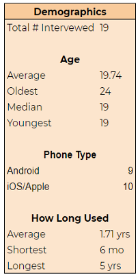
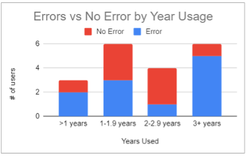

Data Collection
Methodology
The goal of our data collection was to understand and figure out the errors that users make when it comes to using Venmo. The questions were designed to collect this data by understanding the user’s experience with Venmo and with apps similar to it. It is common for college students to use the Venmo app since its design is intended to be fast and convenient for money transfers. The task (Question 5), was to get users to request and transfer money through the Venmo app. This will help us see the types of slips and mistakes that users can make while using the app. These errors are expected to be made because the app doesn’t have clear signifiers to where users can easily locate the request/send buttons. Additionally, the Venmo app has different user interfaces depending on whether the user has an Android or iPhone. These different interfaces add to the errors that users can make because Android users develop different mental models of the app compared to that of iPhone users.
Those who were interviewed were college students with no specific demographics, and picked at random. Most interviews were conducted on campus and was a one to one meeting. The interviewer asked a random person if they had the Venmo app and asked to take part in an interview. Then the interviewer proceeded to ask questions before asking the interviewee to complete a task (request and send money to interviewer). This whole interview process, like stated above, helped the data collection go smoothly as we were able to observe the interviewee and analyze what slips/mistakes they made during the task portion of the interview.
1. What are your general thoughts about Venmo?This question will be used to get the opinions that people have about Venmo. It could also be a guiding question that could help us find out whether or not they like this product. Since we are trying to redesign this app, having this question will let us know about the structure of their mental model. This will also help us find out what the most important features are for the users. On the other hand, this question will also let us know features about the product that the user doesn’t like allowing us to find the root of the problems people have when interacting with this app.
2. How long have you been using Venmo? Why did you start using Venmo?Asking these questions will give us a better idea about how well the person knows the app, and help us guide them into talking about their journey with Venmo and how their knowledge about this app has changed over time. Having this question would inform us about the evolution of their mental model of the application.
3. When and where did you last use Venmo?People use Venmo for a variety of reasons, and with this question, we would be able to extract how often people engage with the app. Whether it be needing to pay someone, or waiting for someone to pay you back, understanding the user’s reasoning for using the app will be very important to our redesign.
4. Do you know any other apps similar to Venmo?These questions are used to see other apps that people know of, and how these apps have morphed their mental models. In addition, asking them these questions will also let us know if they prefer certain features of one app over the other. Things such as having better navigation, connection to banks, and popularity are a couple of the characteristics we are expecting when people describe these apps. We are also looking to see what features properly bridge the gulf of execution in a transaction app.
5. PROCESS- Have them request from us —> Ask them to locate this request
- We complete the request
- We request our money back —> Ask them to locate our request
- Have them complete our request
By asking the users to follow this process, it becomes easier to see where and how possible errors are made when requesting or sending money through Venmo. This form of collecting data is known as the Master-Apprentice model. The person conducting the interview When the user requests money, we get to see how the user decides to execute this task. Does the user search up the username by going to the search tab? Or does the user use the shortcut and instantly find them and request/send money?(Figure 1.1) This process helps us understand which users are more accustomed to using venmo and which are less avid with its’ various functions. Additionally, this process lets us see a users mental model of the app and how their gulf of execution is enacted, and then how their gulf of evaluation is either met, or if not, then how they decide to go back to the gulf of execution. They attempt to execute requesting/sending money, and then they evaluate whether or not they did this action correctly. After completing the processes, we asked follow up questions about any errors we find that the user had committed. This is to understand their mental model much better and distinguish what type of error the user made. What may have appeared as a Knowledge-Based Mistake may have actually been a Memory-Lapse Mistake because the user was stressed from having their screen being recorded.
Error Analysis
According to the interview data, most common errors that interviewees made are Memory-Lapse Slip, Description-Similarity Slip and Knowledge-based Mistake. For the Memory-Lapse slip, most interviewees made this error because they forget to add notes before sending the pay/request (Figure 2.1). There are also situations that they forget to enter money amount or just forget where to find the correct interface due to panic because of the screen capture. For this type of error, users have the correct mental model to complete the task but due to some memory lapse, they forget some steps.

For the Description-Similarity Slip, due to the similarity of the process, users may automatically do the operations that they usually do. In the interview, one user click “pay” instead of “request” because she usually click “pay” (Figure 2.2). Another interviewee try to find the payment under “incomplete” section but it’s actually not there. Interviewees who make this type of slips also have correct mental model for how to use this app but because they are doing another similar process too often, they automatically repeat that process for another similar but not exact task.

The most common error is knowledge-based mistake, which takes about 44% of all errors. For this error, interviewees just simply don’t know where the correct tab is and start to randomly tapping familiar tabs to guess (Figure 2.3). This is a mistake because users do not have a correct mental model for the product because they are lack of knowledge to the product and there is no good system image to gap the gulf of execution. There are also some small mistakes like rule-based mistake, in which user don’t know the rules of the decimal point in venmo by thinking it would be added on automatically and turn out put in 0.1 instead of 0.01. That is a mistake because they are using the wrong method to enter number, which means users don’t have the correct mental model to interact with this function.

Pattern & Trends
We had a small sample size of 19 people. It is important to note that we also had 9 Android users and 10 Apple users. The user interfaces between the both are slightly different from each other, so in order to “even the playing field” we tried to interview each one an even amount of times. It is also important to note that we interviewed ages ranging from 19 - 24 (general college ages); however, a majority of those interviewed were of the same age group (19-years-old). It is possible that this may have affected our data because they’ve been using venmo for a shorter period of time compared to other users. Not only that, but only 3 of our 19 interviewees could be considered “new” users (under 1 year of use) meaning that our data involves experienced users. While this may not be a huge issue; this may have interfered with us learning how people learn how to find and us these specific features.
Despite this, (Figure 3.2) shows that no matter how experienced a user is, there is still room for error. It is thought that with experience comes less errors; however, looking at the stacked bar graph it appears that the users who used have been using the app longer actually made more errors. This information is crucial because it suggests that even avid users are making errors, thus showing that the problem with these errors aren’t merely human mistakes, but are mistakes caused by a poorly designed financial app. This is not to say that Venmo is a bad app, but rather that Venmo can be improved to minimize the mistakes which even avid users find themselves making. In order to minimize the errors made, it is important to understand where the problem lays. In this case, Venmo’s application design is the problem linked to these errors.
